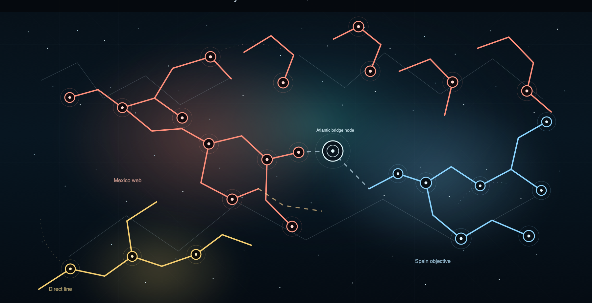

Start with a weak link
A person, record, location, or family connection becomes the case target. The workflow preserves the question being tested.
Workflow
ProofBranch is designed to run a research case, not just answer a question: search, cluster, compare, flag, and return the next decision point.
Request early access
A person, record, location, or family connection becomes the case target. The workflow preserves the question being tested.
Records, images, indexes, household clusters, and place clues are gathered as evidence candidates rather than isolated search results.
Names, dates, relationships, geography, and duplicate risk are checked before the workflow suggests a branch update.
Contradictions are surfaced as review material. A conflict should slow the write-back path, not disappear inside confident prose.
The researcher sees proposed facts, citations, confidence notes, conflicts, and next-step recommendations before choosing what moves forward.
Researcher view
Names, dates, relationships, and places with the evidence attached.
Source references and image context carried with the suggestion.
What made the proposal plausible, and what still needs caution.
The record or archive path most likely to settle the remaining gap.